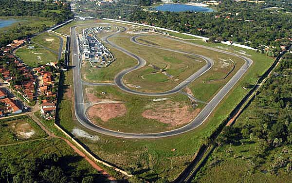

Informações técnicas sobre relevo, população, IDH etc.
| INFORMAÇÕES | |
|---|---|
| Municípios limítrofes | Aquiraz , Itainga , Maracanaú , Pacatuba , Fortaleza , Pindoretama , Horizonte , Maranguapa , Guaiúba , Caucaia , Pacajus , Cascavel , Chorozinho , Acarape , Beberibe , Redenção , Barreira |
| Fundação | 23 de junho de 1987 (33 anos) |
| Área total | 1099,93 km² |
| Clima | tropical |
| PIB | 1 081 127 430 |
| IDH | 0,701 (alto) |
| INFORMAÇÕES TERRITORIAIS | |
|---|---|
| Número de habitantes | 53 618 habitantes |
| Superfície de Eusébio |
7 901 hectares
79,01 km² (30,51 sq mi) |
| Densidade populacional | 678,6 ha./km² |
| Altitude de Eusébio | 26 metros de altitude |
| Coordenadas geográficas decimais |
Latitude:
-3.89029
Longitude: -38.4513 |
| Coordenadas geográficas sexagesimais | Latitude: 3° 53' 25'' Sul , Longitude: 38° 27' 5'' Oeste |
| INFORMAÇÕES DO MUNICÍPIO | |
|---|---|
| Endereço da Prefeitura Municipal de Eusébio |
Eusébio
Prefeitura de Eusébio
Rua Alexandre Arraes, 757 Eusébio - CE, 63170-000 Brasil |
| Telefone da prefeitura |
(88) 3530-1237
Internacional: +55 (88) 3530-1237 |
| Fax |
(85) 3260-2835
Internacional: +55 85 3260-2835 |
| Endereço electrónico da prefeitura |
pme@secrel.com.br
|
| Site oficial do município | eusebio.ce.gov.br |
| INFORMAÇÕES DO ADMINISTRATIVAS | ||
|---|---|---|
| Prefeito de Eusébio | ACILON GONÇALVES PINTO JUNIOR | |
| Partido politico | PL | |
| INFORMAÇÕES DE TRANSPORTE | |
|---|---|
| Transporte urbano disponível | Rodovias Estaduais e Nacionais |
| Aeroporto |
Aeroporto Internacional Pinto Martins
15.6 km
Aeroporto Dix-Sept Rosado
189.4 km
Aeroporto de Sobral
210.8 km
|
| INFORMAÇÕES DE DISTÂNCIA A OUTRAS CIDADES | ||
|---|---|---|
| São Paulo : 2359 km | Rio de Janeiro : 2178 km | Brasília : 1682 km |
| Salvador : 1011 km | Belo Horizonte : 1871 km | Manaus : 2399 km |
| Curitiba : 2662 km | Fortaleza : 22 km mais perto | Recife : 609 km |
| Belém : 1150 km | Porto Alegre : 3205 km | Guarulhos : 2337 km |
| Campinas : 2311 km | São Luís : 668 km | Goiânia : 1850 km |
| Distância calculada em linha reta! | ||
Conheça mais sobre a história da Eusébio.
As terras localizadas entre Aquiraz e Messejana ou entre os rios Pacoti e Coaçu eram habitadas pelos índios potyguara e outras tribos pertencentes ao tronco tupi como os jenipapo-kanyndé, junto a religiosos e militares portugueses, que vieram habitar a região visando catequizar os nativos e impedi-los de comercializar com outros povos europeus.
A presença portuguesa nessa região estabilizou-se nas primeiras décadas do Século XVII, e a casa (ficava entre a atual Praça 23 de julho e o atual Polo de Lazer) de seu Eusébio[carece de fontes](um criador e comerciante de animais) virou um ponto de parada e descanso para os comboieiros que vinham de Beberibe, Cascavel e Baixinha, para venderem gêneros alimentícios em Fortaleza, mais precisamente na estação de bonde. Talvez daí surgiu o nome do local e o potencial de Eusébio como ponto de paragem e entreposto de mercadorias.
Ao longo dos anos, o povoado às margens da estrada que ligava o Ceará e o Rio Grande do Norte - construída antes mesmo da chegada dos portugueses - manteve sua posição como ponto de parada. Em 1933 era um distrito de Aquiraz, já chamado Eusébio, que então assumiu o nome de Eusébio de Queiroz.Em 1938 passou a chamar-se apenas Eusébio. Já nos anos oitenta do Século XX, indústrias foram instaladas nessa região, fato que incrementou a economia local e acelerou o seu processo de emancipação como município em 1987 Com o antigo Prefeito Edson Sá. Nos dias de hoje o município de Eusébio faz parte da Região Metropolitana de Fortaleza.
Saiba mais sobre os melhores lugares e o que fazer em Eusébio.
Dentre os poucos pontos turisticos de Eusébio o que mais se destaca é o Autodromo Internacional virgílio távora um dos autódromos mais antigos do nordeste brasileiro

Veja como chegar nos melhores pontos de Eusébio
Essas rotas servem apenas para fins de planejamento. Obras, trânsito intenso, fatores climáticos ou outros eventos podem fazer com que as condições sejam diferentes dos resultados no mapa, por isso é preciso planejar o trajeto levando tudo isso em conta. Obedeça a todas as sinalizações ou avisos que aparecerem em seu trajeto.